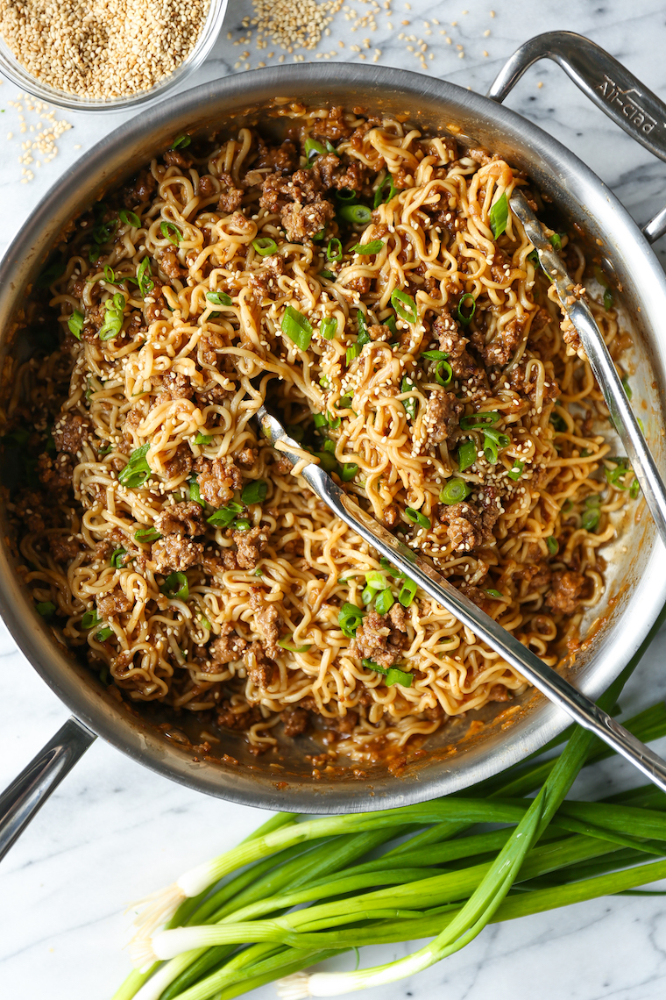

Quick Ramen Noodle Stir Fry

This doesn’t require too many ingredients, and by using ground beef and instant ramen noodles, this dish can’t come together any quicker.
The noodles just need 3-4 minutes to get nice and tender while your ground beef gets that beautiful crumble before you stir in the sauciest of all sauces that require only a few pantry staples.
From there, you can stir in those softened ramen noodles to sop up all those saucy bits.
Ingredients:
- 2 (3.5-ounce) packages instant ramen noodles, flavor packets discarded
- 1/3 cup beef stock
- 1/4 cup oyster sauce
- 1 tablespoon rice wine vinegar
- 1 teaspoon Sriracha, or more, to taste
- 1 tablespoon toasted sesame oil
- 1 pound lean ground beef
- 1 cup diced sweet onion
- 3 cloves garlic, minced
- 1 tablespoon freshly grated ginger
- 2 green onions, thinly sliced
- 1/2 teaspoon toasted sesame seeds
Steps:
- In a large pot of boiling water, cook ramen noodles until tender, about 3-4 minutes; rinse with cold water and drain well.
- In a medium bowl, whisk together beef stock, oyster sauce, rice wine vinegar and Sriracha.
- Heat sesame oil in a large skillet over medium heat. Add ground beef and onion, and cook until beef has browned, about 3-5 minutes, making sure to crumble the beef as it cooks; drain excess fat.
- Stir in garlic and ginger until fragrant, about 1 minute.
- Stir in beef stock mixture, scraping any browned bits from the bottom of the skillet.
- Stir in ramen noodles until heated through and evenly coated in sauce, about 1-2 minutes.
- Serve immediately, garnished with green onions and sesame seeds, if desired.
Recipe from: Damn Delicious